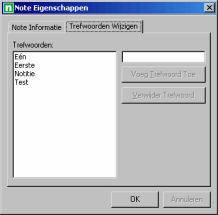
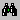
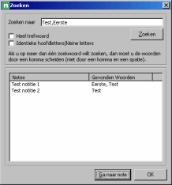

|
Om de trefwoorden te wijzigen moet het venster Note Eigenschappen worden geopend.
Dit venster kan worden geopend door op te drukken, door op Ctrl+P te drukken of door de opdracht Trefwoorden wijzigen... te kiezen uit het menu Note. De lijst links geeft de trefwoorden weer die de notitie op dit moment heeft. Trefwoorden kunnen worden toegevoegd en verwijderd door gebruik te maken van de knoppen Trefwoord toevoegen en Trefwoord verwijderen. |
 |
|
Om de trefwoorden te wijzigen moet het venster Zoeken worden geopend.
Dit venster kan worden geopend door op  te drukken, door op Ctrl+F te drukken of door de opdracht Zoeken... te kiezen uit het menu Bewerken. In het tekstvak Zoeken naar kan je één of meer woorden opgeven waar naar gezocht moet worden. Gebruik een komma (",") om de woorden te scheiden als er naar meer dan één woord gezocht moet worden. De gevonden notities worden weergegeven in de lijst onder de zoekopties. Door een gevonden notitie te selecteren en op de knop Ga naar note te klikken, kan je direct naar de geselecteerde note overschakelen. Zoeken in...De aankruisvakjes voor Trefwoorden en Beschrijvingen zorgen ervoor dat er respectievelijk in de trefwoorden en de beschrijvingen van de notities gezocht wordt.Hele woordenDeze optie zorgt ervoor dat het trefwoord waar naar gezocht wordt ook één trefwoord is van een notitie en niet een deel van een trefwoord.Bijvoorbeeld: Er wordt gezocht naar het trefwoord "test". Dan wordt de notitie met het trefwoord "dit is een test" niet gevonden, maar een notitie met de twee trefwoorden "dit is" en "test" wel. Identieke hoofdletters/kleine lettersDeze optie zorgt ervoor dat de hoofdletters en de kleine letters van het trefwoord waar naar gezocht wordt exact overeen komen met de hoofdletters en de kleine letters van het trefwoord van een notitie.Bijvoorbeeld: Er wordt gezocht naar het trefwoord "test". Dan wordt de notitie met het trefwoord "Test" niet gevonden, maar een notitie met het trefwoord "test" wel. |
 |